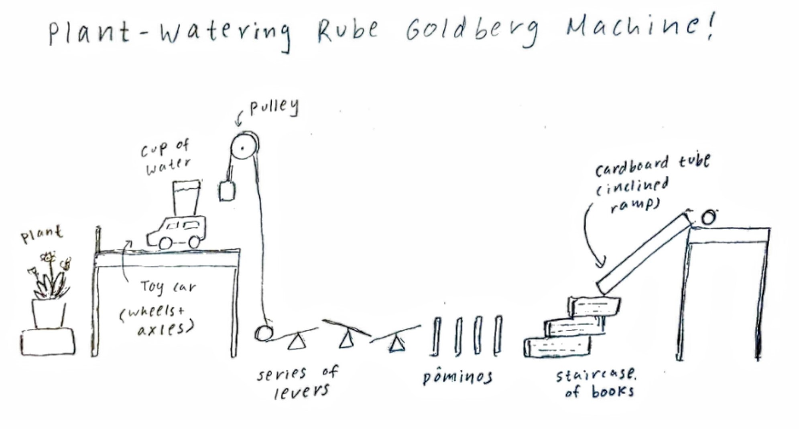

Our classes are as follows:
Engineering I
Are you ready?
- Operations with decimals and fractions
- Calculating area and perimeter of rectangles
- Measuring distances and lengths with a ruler
What will this course cover?

Engineering II
Are you ready?
- Calculating volume, area, and perimeter of various shapes and solids
- Creating and analyzing different types of graphs and charts
- Ratios and unit conversions